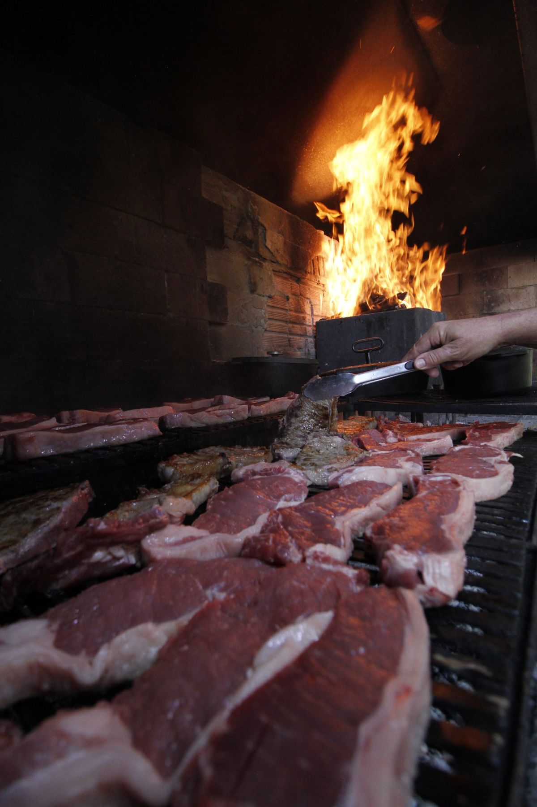
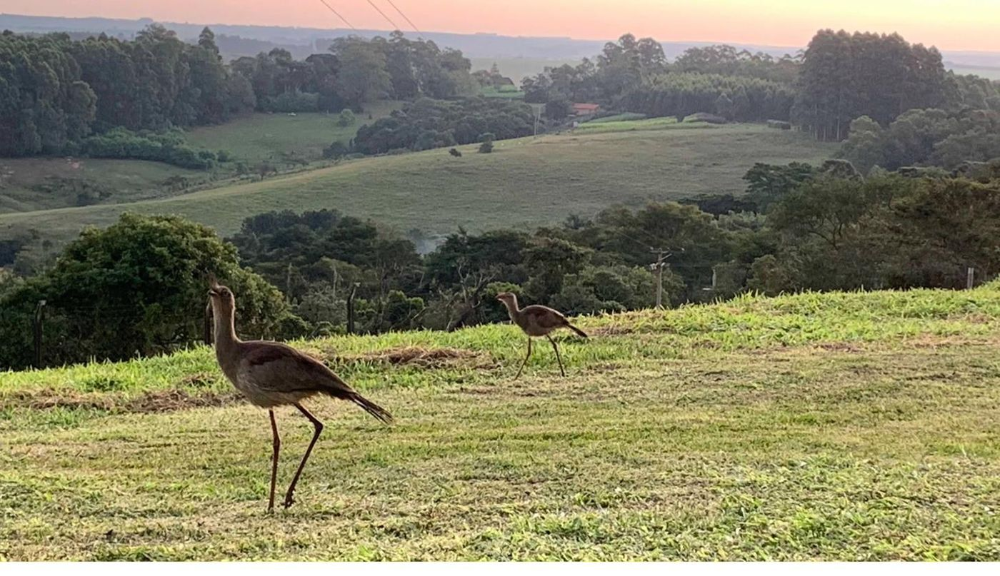
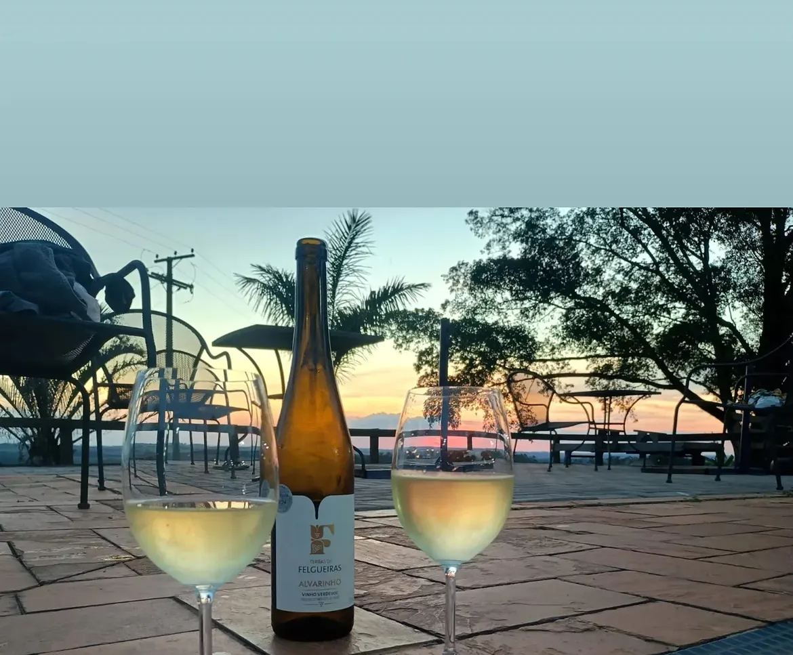

Parrilla de lenha, vinhos selecionados, queijo artesanal e pão de fermentação natural — com hospedagem panorâmica a 35 km de Brotas e 15 km do Patrimônio. Um fim de semana que vira memória.
Reserve sua experiênciaVocê chega pela serra, a estrada vai subindo e o horizonte vai se abrindo. A 990 metros de altitude, no coração do estado de São Paulo, o Recanto das Seriemas aparece como um refúgio que reúne tudo que faz um fim de semana valer a pena: fogo, vinho, queijo, campo e silêncio.
Aqui o tempo desacelera. O almoço é na parrilla de lenha — cortes nobres, costelinha defumada, legumes grelhados e a batata seriema que virou assinatura. O queijo é fresco, feito na propriedade. O pão é de fermentação natural. Os vinhos são selecionados e servidos com harmonização guiada.

Braseiro real, sem atalhos. Cortes selecionados que descansam no calor certo pelo tempo certo. A costelinha defumada leva 6 horas. Os legumes vêm da região. Cada refeição é um evento — aberto aos fins de semana, com vagas limitadas e reserva recomendada.

6 suítes com varanda e rede, cada uma com vista para o vale e o pôr do sol da Serra do Itaqueri. O café da manhã vem com queijo fresco, pão artesanal, geleias caseiras e frutas da região. Silêncio absoluto. Piscina panorâmica. ★5.0 no Airbnb, top 5% dos anfitriões.

O vinhedo está em formação — Syrah, Cabernet Franc, Marselan e Sauvignon Blanc crescendo na serra. As experiências de degustação usam vinhos selecionados harmonizados com queijo artesanal e pão de fermentação natural produzidos aqui. Piquenique entre as vinhas e degustação ao entardecer.
Cada experiência inclui produção artesanal própria — queijo fresco, pão de fermentação natural e geleias caseiras.
Disponíveis a partir de maio de 2026. Agendamentos já abertos.
Queijo artesanal, pão de fermentação natural, vinhos selecionados. Entre as vinhas, com vista para o vale. ~2 horas.
Harmonização de vinhos curados com queijo fresco, geleias e pão artesanal — tudo produzido na propriedade.
Vinhos selecionados com petiscos artesanais enquanto o sol desaparece atrás da serra.
O Recanto é para quem busca mais que uma refeição ou uma diária — é para quem quer um fim de semana completo no interior paulista. Aniversários, pedidos de casamento, lua de mel, ou simplesmente uma pausa que muda a semana. Negócio familiar, recepção pessoal, experiência exclusiva.
Sem intermediários. Conte o que você procura e montamos a experiência ideal para vocês.
Reserve pelo WhatsApp(11) 99112-4853 · @seriemasparrilla